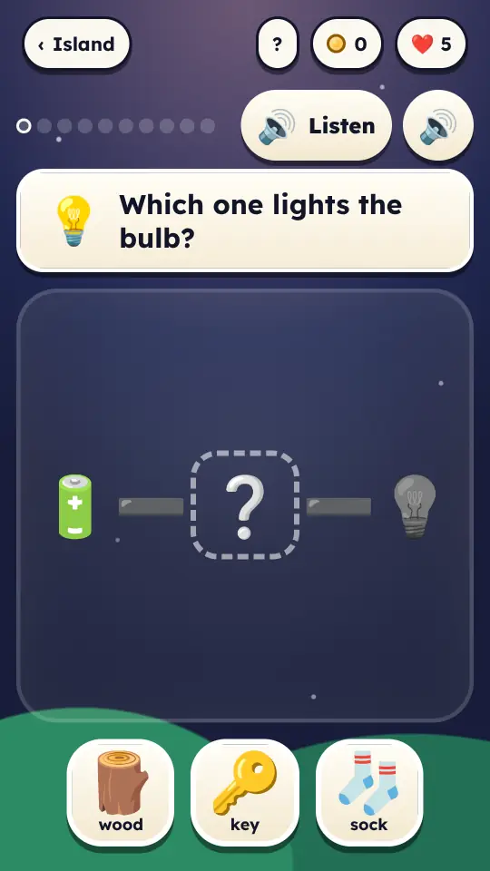

All labs › Physics › Light the Bulb
Physics lab · Raju's Workshop Yard
Light the Bulb
बल्ब जलाओ · किससे बल्ब जलेगा?
Put different things into a gap in a wire and see which ones light the bulb.
- Physics
- Explorer · ages 4–7
- 10 levels
- English · हिंदी
- Free, no sign-up

How it works
Light the bulb
- The bulb is off because there is a gap in the wire.
- Tap a thing to put it in the gap.
- Metal lets electricity through, so the bulb lights. Wood and cloth do not.
Explorer labs read instructions aloud, and a wrong try never costs anything.
Why it works
The big idea
Electricity is like water that needs a path: metal things make a bridge across the gap so it can flow and the bulb lights; wood, cloth and plastic block the path.
What children learn
Skills in this lab
- Some things let electricity through
- Metals conduct; wood and cloth do not
- Testing one thing at a time
For parents and teachers
This lab is in the Explorer band (ages 4–7). Each player picks a band, and sees only the labs made for it.
Curio Island is free in the browser with no sign-up. Progress is saved on this device only. Ads are child-safe and non-personalised, and never appear inside a lab.
Part of Raju's Workshop Yard on the island. 10 levels to finish.